Uso riservato · Materiali per la stampa
Comunicato, scheda tecnica e fotografie ad alta risoluzione per la mostra Il Nodo di Dara. Rimini, 2026.
Scheda della mostra
Comunicato stampa
Rimini, 5 Marzo 2026
"Basta sussurrare": al Museo della Città di Rimini la mostra fotografica che rompe il tabù della menopausa.
Dal 7 marzo al 10 maggio 2026, il progetto "Nodo di Dara" celebra la forza e la rinascita delle donne attraverso la fotografia come cura.
Il corpo femminile come territorio di mutamento, non come oggetto di giudizio estetico. Inaugura il 7 marzo alle 17:30, alla vigilia della Giornata Internazionale della Donna, presso il Museo della Città di Rimini, la mostra fotografica Nodo di Dara, un progetto ideato dalla fotografa Elisabetta Acquaviva per dare voce all'invisibilità sociale delle donne in menopausa.
Il progetto si ispira all'antico simbolo celtico legato alle radici della quercia. Proprio come le radici, la forza delle donne è spesso invisibile ma profonda e intrecciata, forgiata dall'esperienza. "Ci hanno insegnato a sussurrare la parola menopausa," spiega l'ideatrice, "ma durante il percorso fotografico quel sussurro diventa un coro".
Prendersi Cura attraverso l'Immagine: la mostra non è una semplice esposizione di ritratti, ma il racconto di un processo di ascolto profondo. Durante gli shooting, la fotografa agisce come una guida, accompagnando le donne in un viaggio che parte dalla naturale difesa e rigidità iniziale per approdare a un abbandono fiducioso davanti all'obiettivo. Gli scatti finali sono la prova visiva di questa metamorfosi.
Le protagoniste degli scatti diventano così "Ambasciatrici" di un messaggio potente: la menopausa non è una fine, ma un tempo nuovo, in cui sentirsi forti, vere e radicate.
Biografia — Elisabetta Acquaviva
Elisabetta Acquaviva è una fotografa di Rimini con oltre 35 anni di esperienza. Cresciuta nel laboratorio di stampa in bianco e nero dei genitori, la fotografia è sempre stata parte della sua identità. La sua ricerca artistica si concentra sulle soglie del femminile, esplorando quei passaggi di vita spesso avvolti nel silenzio.
Dopo il progetto La Tenda Rossa, dedicato al tabù delle mestruazioni, nel 2019 entra in menopausa e vive questa trasformazione come un "tornado" che le cambia la vita. Da questa esperienza personale nasce il Nodo di Dara, un progetto fotografico e sociale che documenta il vissuto di donne in menopausa attraverso ritratti intimi e testimonianze video. Ad oggi, Elisabetta ha fotografato oltre 100 donne tra i 45 e i 67 anni, creando uno spazio sicuro dove la fotografia diventa strumento di trasformazione.
"Io non fotografo, io accompagno." Formata anche come doula, Elisabetta applica nel suo lavoro fotografico l'ascolto profondo e l'accoglienza che caratterizzano questa figura di sostegno. Il suo approccio non mira alla perfezione estetica, ma all'autenticità emotiva: ogni sessione fotografica è un percorso di riconoscimento e rinascita.
Il progetto Nodo di Dara è stato presentato al TG3 Nazionale nel novembre 2025, ottenendo attenzione mediatica a livello nazionale per la sua capacità di rompere il tabù della menopausa attraverso il linguaggio visivo.
Citazioni dell'artista
"Il corpo femminile non è oggetto di giudizio, ma territorio di mutamento."
Elisabetta Acquaviva · Nodo di Dara
"Non è un ciclo che si chiude, è una radice che si fortifica."
Elisabetta Acquaviva · Nodo di Dara
"Ci hanno insegnato a sussurrare la parola menopausa. In questo spazio, quel sussurro diventa un grido, un canto, una risata collettiva."
Elisabetta Acquaviva · Nodo di Dara
Fotografie — Alta risoluzione
Immagini libere da diritti per utilizzo editoriale con la mostra Il Nodo di Dara. Citazione richiesta: © Elisabetta Acquaviva
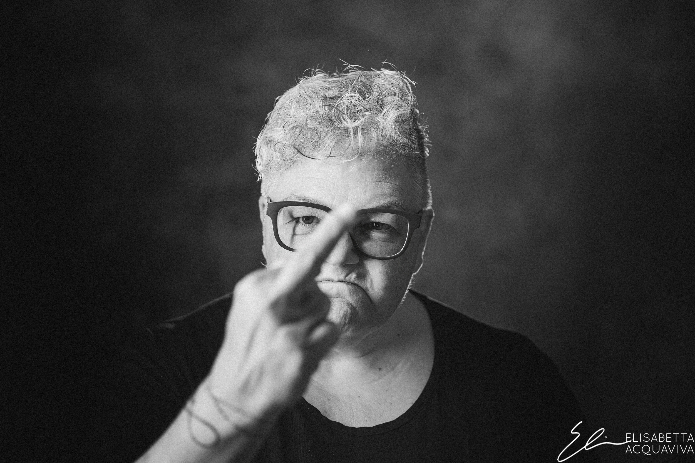
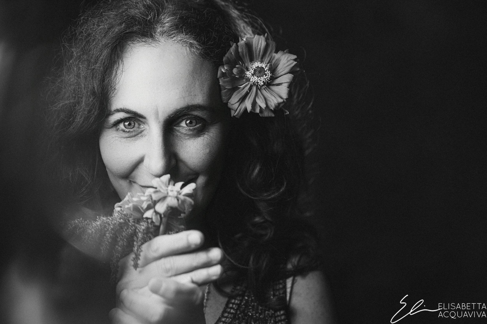
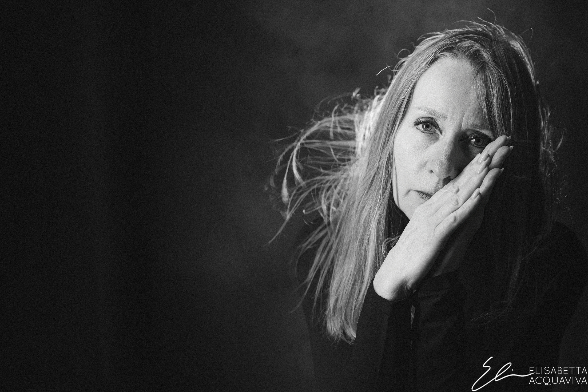
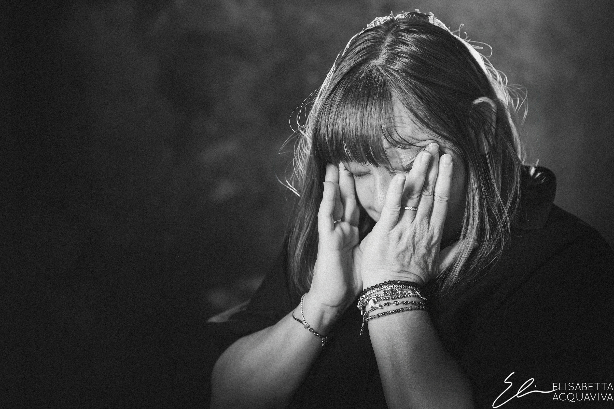
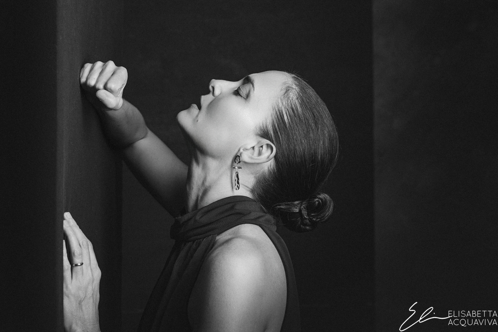
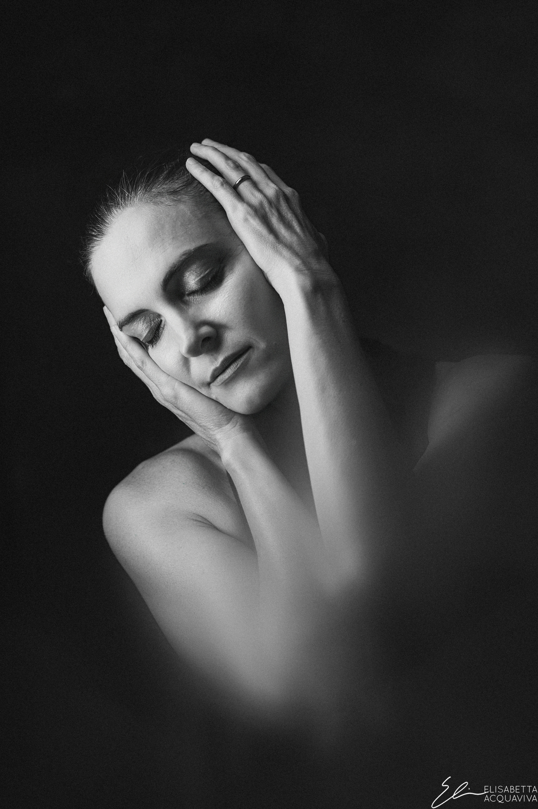
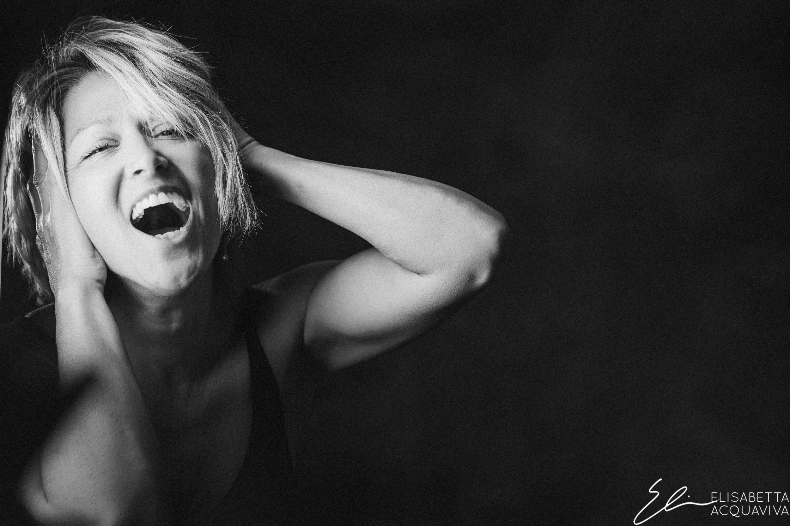
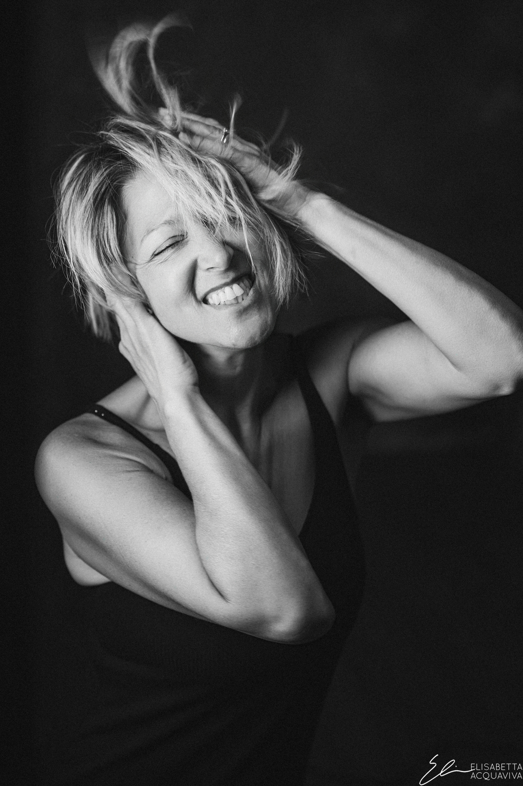
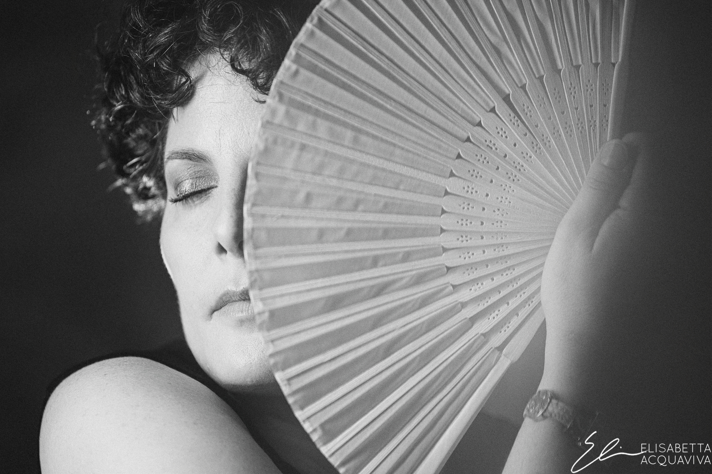
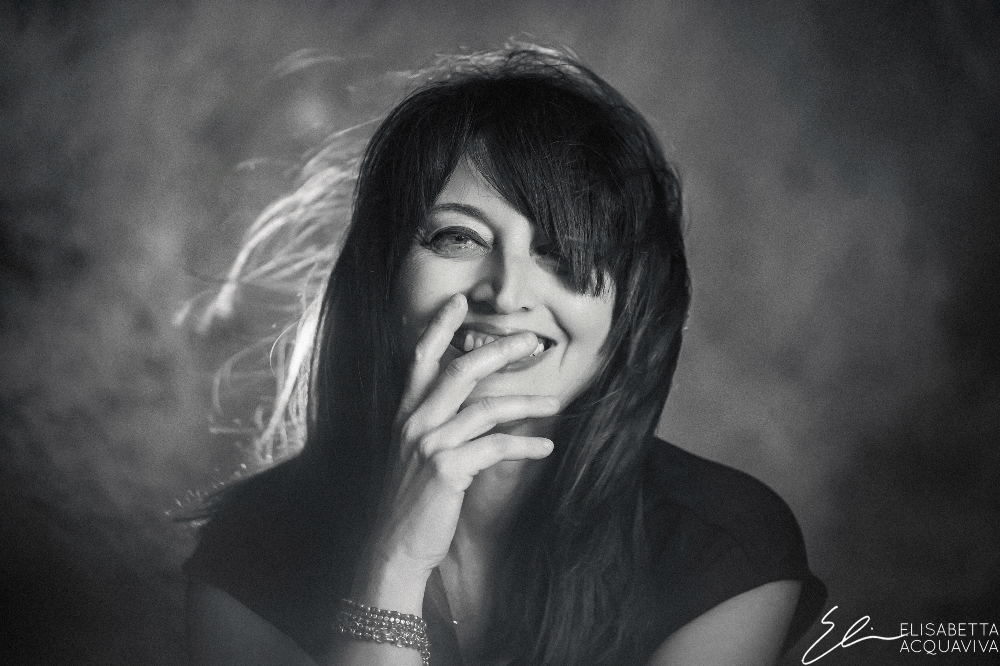
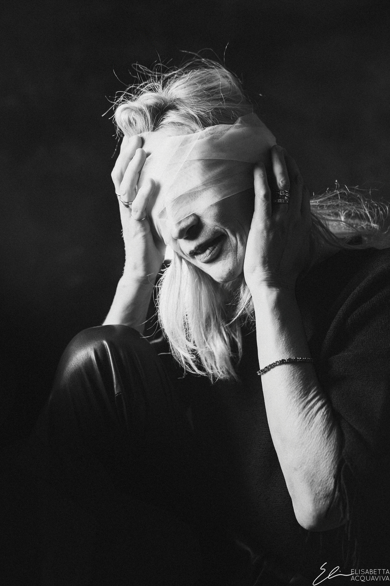
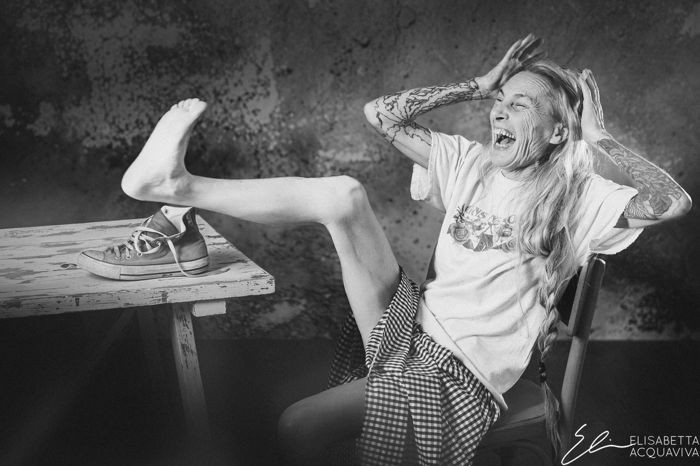
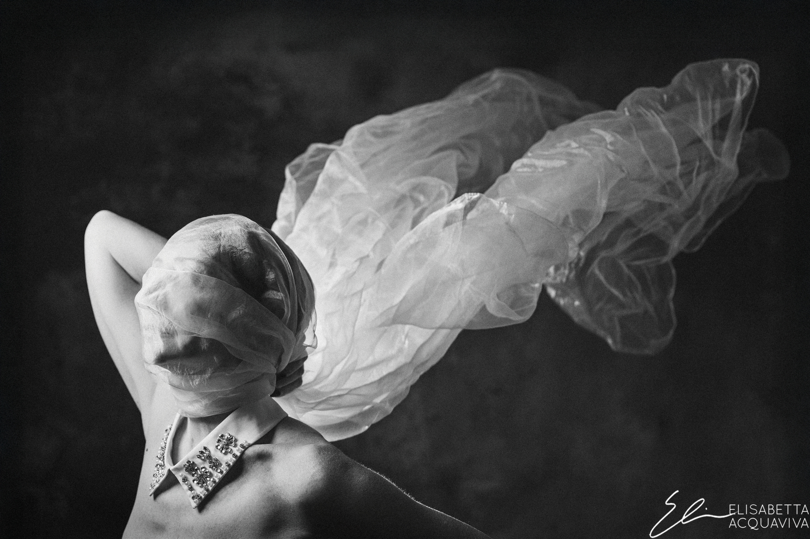
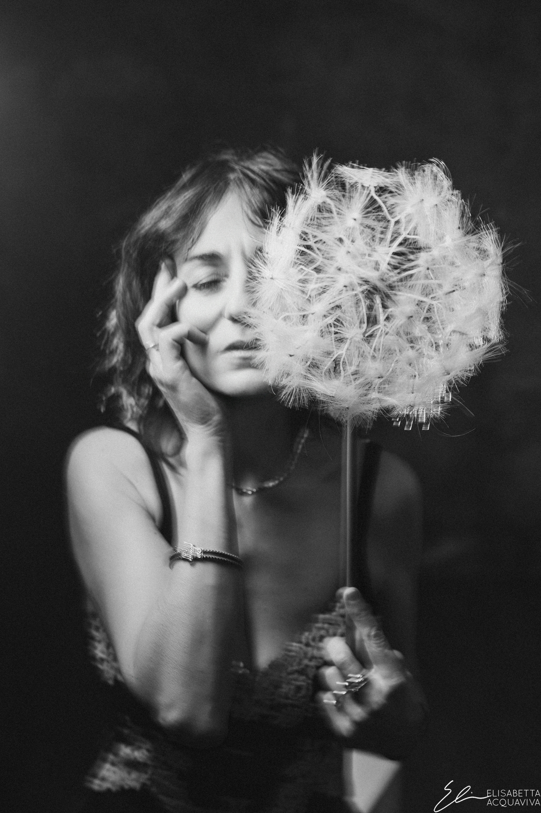
Contatto stampa
Ufficio stampa
Elisabetta Acquaviva
Via di Mezzo 87, 47923 Rimini (RN)